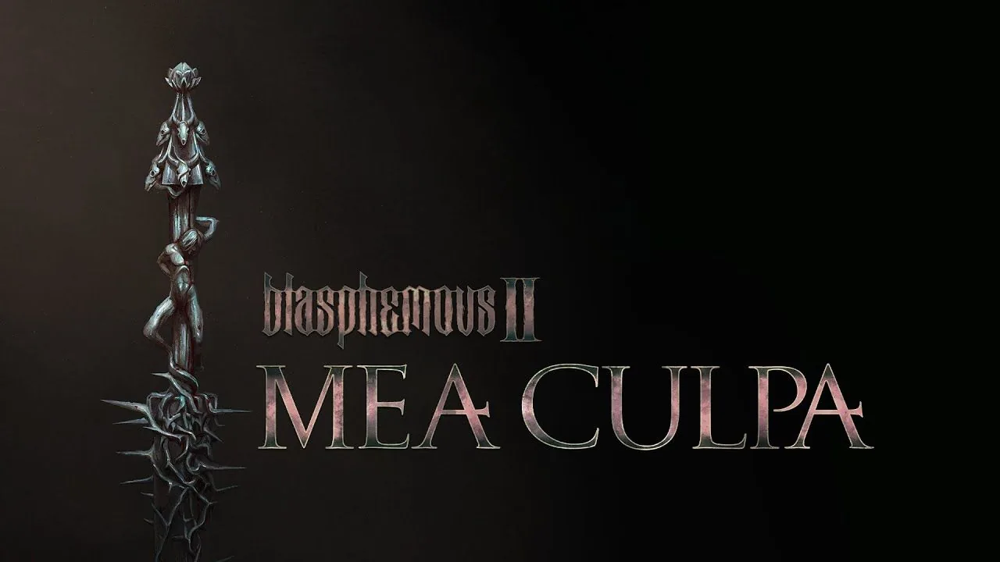

A Review of Blasphemous 2: Mea Culpa
6/15/2025
Metroidvanias are among my favorite genre of games, and the original Blasphemous was an incredibly exceptional innovation for the genre. It was defined by its rigid soulslike difficulty as well as its immaculate artstyle and aesthetic. Luckily, Blasphemous 2 is a worthy sequel for fans of the first game that increases the difficulty of the experience while adding more sophistication to both combat and platforming.
Its DLC, Mea Culpa, is certainly an additive experience that doesn't detract from the package, but ultimately suffers from a lack of comparable content and some imbalance, all while having an asking price at all compared to the first game's free updates. While Blasphemous 2 suffers from a slightly weaker narrative and a lackluster DLC, it makes up for it by invigorating its platforming and combat with welcome movement additions and new tools to experiment with, creating an experience that is both entertaining and brutal to endure.
I'll try to make this one shorter!
Pixelated Perfection?
The main ace in the hole for the Blasphemous series is without a doubt its impeccable art design. It really serves to elevate the thematic of everything else in the game. In the sequel, these choices prove to be just as beneficial. With the introduction of new set pieces like a vast cathederal in the middle of the sea and temples far away in the sky, the pixel art has never been better. Unfortunately, this beautiful style is missed in the cutscenes. Where the original had memorable pixelated depictions, this one has fully rendered scenes that range from still images to some decent moments. It becomes fairly certain that Blasphemous 2 took one step forward and another step back in its graphical prowess.
On the note of aesthetic, the music of the sequel effectively matches the highs of the first title. It perfectly sets the mood for their respective moments. Lots of variation in the tracks also helps to this end. In between intense string work and calming guitar solos, the soundtrack delivers both power and peace while the player navigates the expanses of the world.
While it wasn't necessarily known for its storytelling, Blasphemous 1 managed to deliver a solidly esoteric narrative through the natural motions of the game. Something similar can be said about Blasphemous 2, but there's a bit more going on this time around; traversing the world as it becomes available carries a lot more gravitas than it did before. The endings were also some of the most memorable parts of the first game, and while the second also carries these high notes of power, they can prove to be a bit confusing to those who don't pay attention to the actions they may perform to get to said endings. However, they are aptly rewarding for the effort needed to get them. Overall, the storytelling method remains the same in the sequel, but the ends to these means may prove to be a disappointment for some.
Love, Death, and Parkour
Another thing the series is now known for is its faithful soulslike elements and platforming challenges. While the challenge of the platforming has moved towards the mandatory paths of the sequel, it is a welcome addition as the new movement capabilities of the player character are natural evolutions from where we left off in Blasphemous 1. Introducing an air dash and a double jump helps to keep up with the now normalized motions of its rivals in the genre. This results in a platforming moveset that rewards mastery and patience while also staying true to some of the rigidity from the first game.
Combat has also been overhauled for the better. Being able to wield three different weapons as opposed to only one will obviously add more to the variety of playstyles available to players. That being said, all of them are required to fully explore the world, unlocking new abilities that open new paths to discover, incentivising players to take note of what is and isn't possible at their current points in progression. Enemies are also plentiful and full of variety, allowing these tools to come to full use against each one. The world itself is also quite rewarding to explore, discovering new characters that empower the player with different abilities and upgrades.
Boss fights are also very solid experiences. They also bring a lot of welcome diversity which is a step up from Blasphemous 1 in my eyes. They all make use of the player's newly acquired skills at the time, with the later entries testing every aspect of their arsenal. While some of these fights feel more like bullet hell than they probably should, this is a solid addition to the game that helps it keep up in terms of fair difficulty in the genre. This helps the general gameplay become more of a war of attrition with each encounter as opposed to a drawn-out slugfest.
An Old Friend
As mentioned earlier, Mea Culpa, the paid DLC for Blasphemous 2, is a bit of a letdown when it comes to narrative power and design. Firstly, the story introduced in the expansion feels half-baked; someting is clearly missing here. This new areas seem relatively easy to fully explore, and the rewards are somewhat limited here. Reinvigorating the base world was a welcome addition, though, introducing more motivations to cover every crevice of the map with notes on when to come back. However, this would all matter more if the new endng was anything to write home about. After experiencing it, it just left me feeling more confused about the whole situation than when I first entered. The impact of the base game's endings is missed here, which sours the storytelling of the DLC as a whole as an unfortunate result.
Additionally, navigating Mea Culpa's challenges is divisive to say the least. We are reintroduced to the titular Mea Culpa, the weapon used in the first game. Fortunately (or unfortunately, depending on perspective), it is just as overpowered as it was then. It could very well become the only weapon the player needs to use when exploring the rest of the expansion and conquering its challenges. Speaking of which, the DLC adds two (technically three) new bosses. They are both solid in quality, although some cheapness is to be expected with the final boss if ill-prepared. While both of these encounters were good, I personally think it does not truly make up for a confusing new narrative and a staggering lack of content for a paid expansion. For reference, every DLC for the first game was completely free of charge. This costs ~$11, and I do not feel as though that money was well spent.
Conclusion
Despite my grievances with Mea Culpa's lack of convincing content and the overall downgrade in artstyle and narrative, Blasphemous 2 is certainly still a game worth checking out for players that are invested in metroidvanias and difficult games. With an exceptional aesthetic and enjoyable steps up in gameplay, the sequel lives up to the series's legacy in more ways than not.